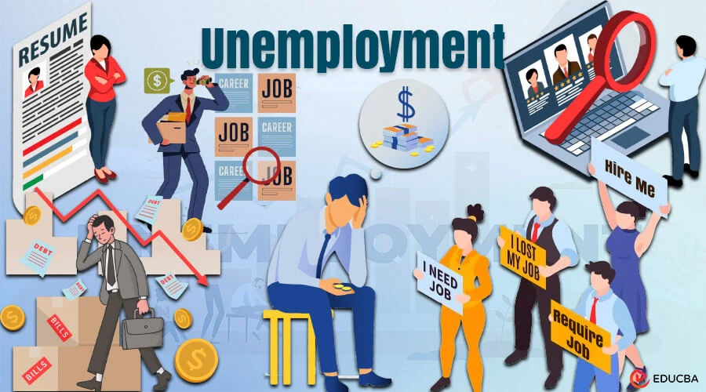
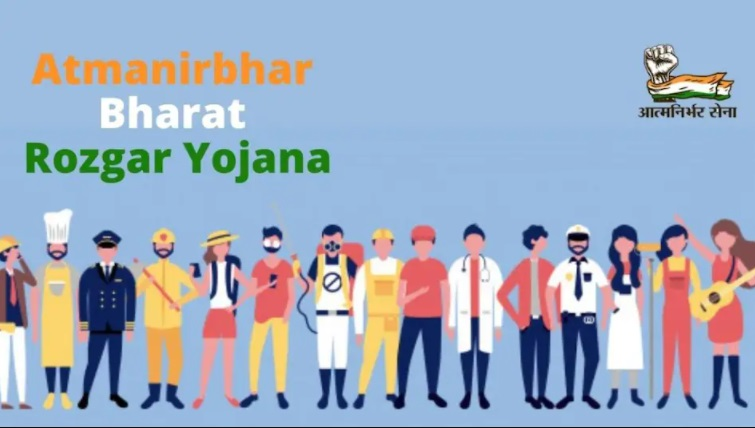
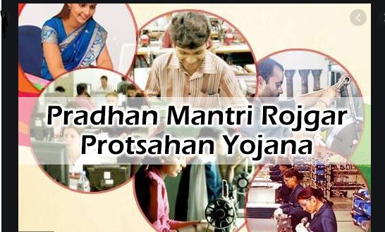
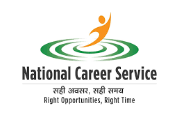
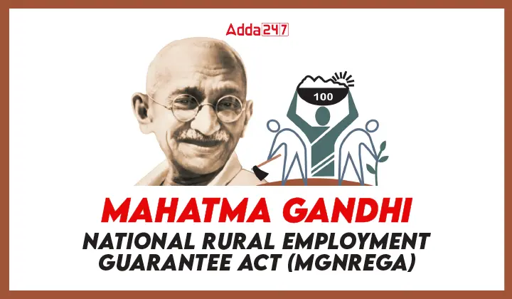

About Unemployment
Employment is having a paid job. It provides income, purpose, and skill development. Types include full-time, part-time, temporary, and self-employment. The labor market, influenced by economic conditions and policies, determines job availability. High employment boosts economic growth, while high unemployment signals economic issues.
Unemployment in India:
Unemployment in India is a significant issue that affects millions of people across the country. It is characterized by the lack of job opportunities for individuals who are willing and able to work. The causes of unemployment in India are multifaceted, including factors such as population growth, economic fluctuations, and technological advancements that reduce the need for manual labor.

The Indian government has implemented various schemes and programs to address unemployment, such as the Mahatma Gandhi National Rural Employment Guarantee Act (MGNREGA), which aims to provide at least 100 days of wage employment to rural households. Additionally, initiatives like Skill India and Make in India are focused on enhancing the skill set of the workforce and promoting domestic manufacturing to create more job opportunities.
Despite these efforts, unemployment remains a persistent challenge, particularly among the youth and in rural areas. Addressing this issue requires a comprehensive approach that includes improving education and vocational training, fostering entrepreneurship, and creating a conducive environment for businesses to thrive.
Solutions
Addressing unemployment requires tackling its root causes and implementing targeted interventions to create job opportunities. While the government has initiated various programs, it is our responsibility to utilize them effectively. Here are some government projects:

Aatmanirbhar Bharat Rojgar Yojana (ABRY) was launched with effect from 1st October, 2020 as part of Atmanirbhar Bharat package 3.0 to incentivize employers for creation of new employment along with social security benefits and restoration of loss of employment during Covid-19 pandemic.
ANBY
Learn More

Pradhan Mantri Rojgar Protsahan Yojana (PMRPY) was launched with effect from 1.4.2016 to incentivise employers for creation of new employment. The beneficiaries registered upto 31st March, 2019 will continue to receive the benefit for 3 years from the date of registration under the scheme i.e. upto 31st March, 2022.
PMRPY
Learn More

Project for transformation of the National Employment Service to
provide a variety of career related services like job matching,
career counselling, vocational guidance, information on skill
development courses, apprenticeship, internships etc. This
project consists of three important components namely -
(i) NCS Portal
(ii) Model Career Centres
(iii) Interlinking of Employment Exchanges.
NCS
Learn More

MGNREGA is to provide at least 100 days of guaranteed wage employment in a financial year to every rural household whose adult members volunteer to do unskilled manual work. This scheme aims to enhance livelihood security in rural areas by providing employment opportunities and creating durable assets. It also helps in reducing rural-urban migration by providing local employment.
MGNREGA
Learn More